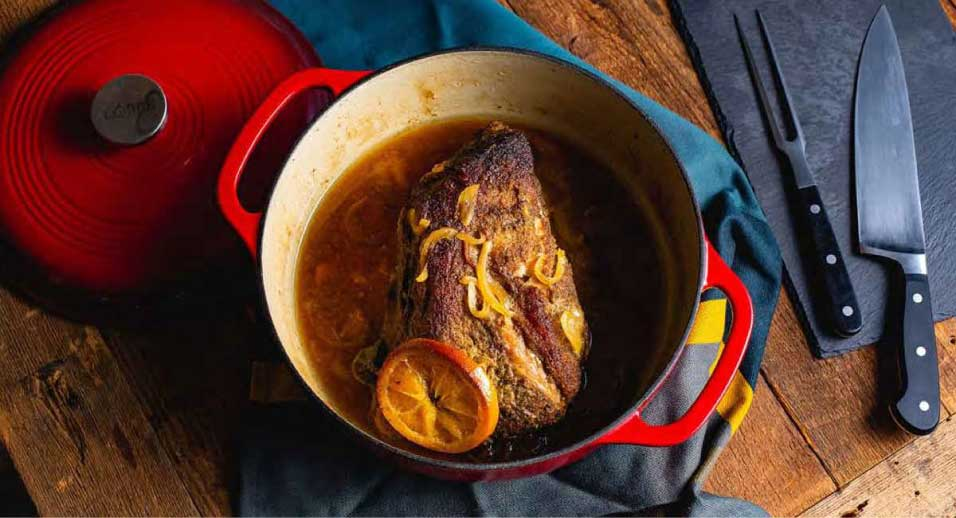
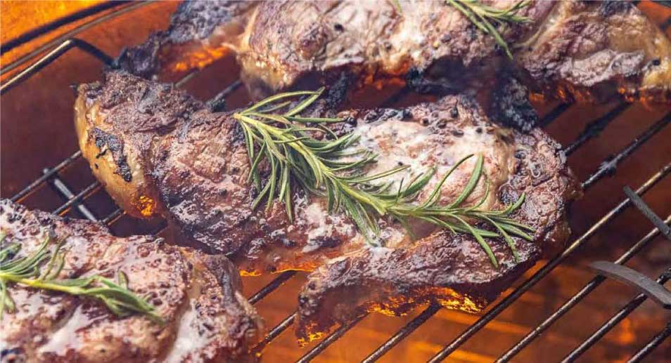

{{> banner class='banner-shop' content='cooking guide ' src='./assets/images/single-blog-banner.jpg' }}

<section class="single-blog">
    <div class="text-center blog__actions">
        <select class="select" name="recipe-filter" id="recipe-filter">
            <option value="All">All</option>
            <option value="recipe-1">recipe-1</option>
            <option value="recipe-2">recipe-2</option>
            <option value="recipe-3">recipe-3</option>
            <option value="recipe-4">recipe-4</option>
        </select>
    </div>
    <div class="single-blog__item">
        <div class="container">
            <figure class="single-blog__figure">
                
                <a href="#" class="text-uppercase banner__btn">ROASTING</a>
            </figure>
            <p class="single-blog__desc">News ash: There are lots of ways to cook meat. But one of the most reliable
                techniques is roasting.
                Simply deˆned, roasting
                relies on hot air and a dry environment (no added liquid, keep meats uncovered) when cooking in the
                oven.</p>
            <p class="single-blog__desc"> Roasting smaller cuts of meat is a friendly weeknight cooking method because
                it frees your hands and
                your stovetop to prepare other parts of the meal (or do something else altogether) while the meat cooks.
                And if you already have the oven cranked, it’s easy enough to throw another pan of vegetables into roast
                alongside the meat – or to
                prepare a sheet pan dinner that roasts ingredients all together in one pan.</p>
            <p class="single-blog__desc">Roasting larger cuts is more of a weekend or holiday project, because the
                bigger the meat, the longer it
                takes to cook. But even though roasting a big hunk of meat takes time, it’s all hands-o‰ in the oven and
                can either feed a
                crowd or set you up with plenty of leftovers.</p>
        </div>
    </div>
    <div class="single-blog__item single-blog__item_bottom">
        <div class="container">
            <figure class="single-blog__figure">
                
                <a href="#" class="text-uppercase banner__btn">GRILLING</a>
            </figure>
            <p class="single-blog__desc">News ash: There are lots of ways to cook meat. But one of the most reliable
                techniques is roasting.
                Simply deˆned, roasting
                relies on hot air and a dry environment (no added liquid, keep meats uncovered) when cooking in the
                oven.</p>
            <p class="single-blog__desc"> Roasting smaller cuts of meat is a friendly weeknight cooking method because
                it frees your hands and
                your stovetop to prepare other parts of the meal (or do something else altogether) while the meat cooks.
                And if you already have the oven cranked, it’s easy enough to throw another pan of vegetables into roast
                alongside the meat – or to
                prepare a sheet pan dinner that roasts ingredients all together in one pan.</p>
            <p class="single-blog__desc">Roasting larger cuts is more of a weekend or holiday project, because the
                bigger the meat, the longer it
                takes to cook. But even though roasting a big hunk of meat takes time, it’s all hands-o‰ in the oven and
                can either feed a
                crowd or set you up with plenty of leftovers.</p>
        </div>
        <picture class="single-blog__bg">
            <source media="(min-width: 992px)" src="./assets/images/single-blog-bg.png">
            <source media="(max-width: 991.98px)" src="./assets/images/single-blog-bg.png">
            
        </picture>
    </div>
</section>